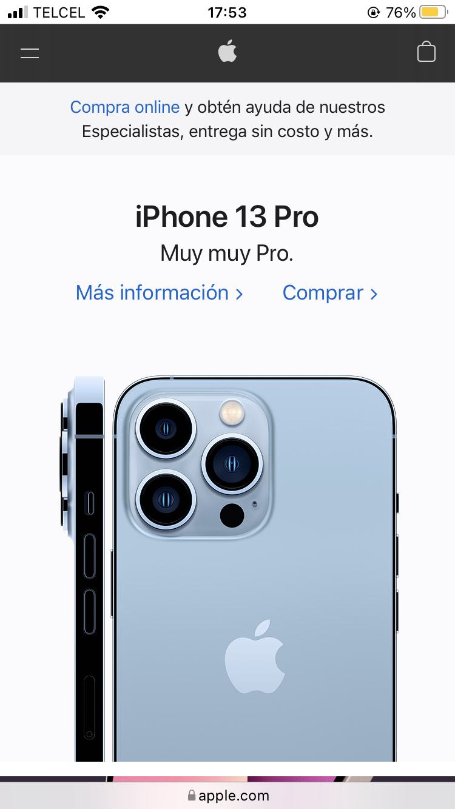

Design Principles Document
Mónica Barrera Chávez
Visual Hierarchy
Lefties
lefties.com
We can tell from the size used for each element what the designers expect us to see in the first
place. In this case, the largest image is the one we should notice first, which also has marketing
to announce sales.
Again, due to the size we realize that the header is the next in the hierarchy, which includes the
logo and
a menu with visual aids to identify each category.
White Space and Clean Design
Apple
apple.com

In this design, we can appreciate the white space throughout the design, especially because of the
background color, and the format of the images they use and the line spacing. Thanks to this, an
amplitude effect is achieved that highlights the elements of the design.
In addition, when using these neutral colors, they make the images stand out more.
Repetition
Telemundo
telemundo.com/>
This example helps us to see the repetition of elements because it is a news page, the format is
simple and they show us a variety of news that we can access.
If we scroll down a bit, the repetition of these elements will be more noticeable, since the format
almost always consists of an image and a header with a brief description.